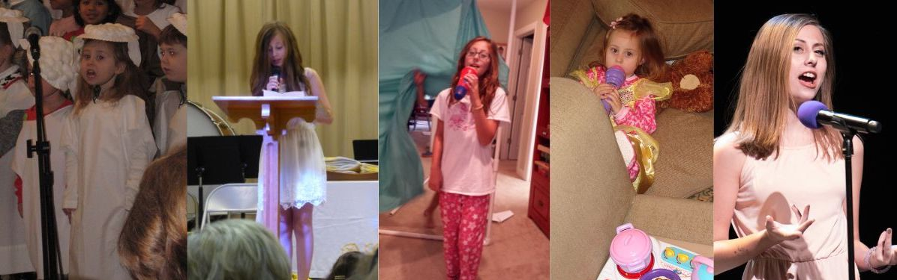

Bella Grace Finck Data Science + Math @ W&M Phone: (804)-929-4155 Email: bellagracefinck@gmail.com Fun fact avalanche: 3 siblings. 2 dogs. Auditioned for American Idol. Failed her learner's permit test the first time she took it. Lost her 7th-grade spelling bee on the word "mustache." Hasn't been able to look at facial hair since.
I spent most of my childhood hoping to one day be a famous singer (or on Broadway, whichever came first). Every day after school, I would come home and plug my microphone into my mom's old laptop and record myself singing, eventually posting recordings on a comically bad Wix website at age 11 and hoping to be discovered. (That website still exists. I almost linked it here, but, as an act of self-preservation, I resisted the temptation.) Somehow, as my a cappella Wicked covers shifted to slow, sad guitar ballads, I realized that I had inadvertently shaped my music taste to be made up of almost entirely female artists. As such, I became a huge fan of female rappers like Nicki Minaj and Flo Milli. In a lot of ways, this project is the convergence of my three lifelong interests – math, music, and gender studies. I am so happy to have brought it to life.
Needless to say, I've changed quite a bit since the days of afterschool jam sessions, and realized that being a famous singer is kind of overrated – data scientist has a way cooler ring to it.
See below for my musical qualifications:

© 2023 Bella Grace Finck